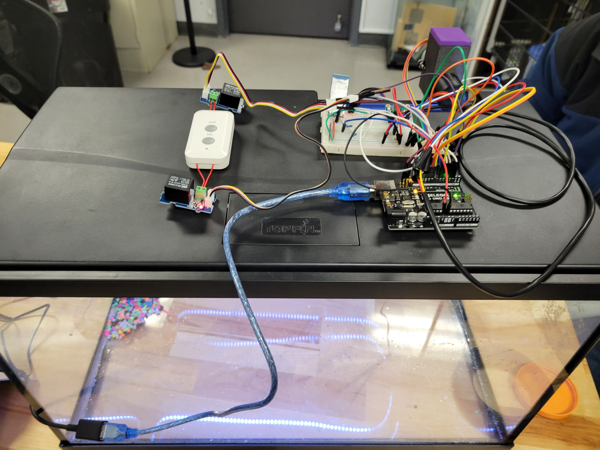

This website showcases the final result of our ECE 196 project. We are Team Emo Nemos.
Problem
This problem was inspired by Kyle’s dad's experience with maintaining a fish tank, and based on research in various forums, home saltwater fish tank upkeep, including monitoring food, water, temperature, salinity, pH, etc, is so time consuming that it is intimidating for the average person to pick up. Fish tank owners need to keep track of all of these variables constantly, while maintaining systems needed to filter water, and also making sure to feed their fish regularly. This requires that the owner be home all the time, which is not always feasible. Solutions to this problem do exist, though they are expensive. For example, one solution sold by Neptune Systems costs about $3000. Our goal is to provide a solution that automates a fish tank while still being affordable.
Solution
We created a unified system that monitors and controls different parameters in a fish tank simultaneously. An Arduino Uno monitors the temperature of the fish tank, activating a water heater if it gets too low. It also cycles the lights on and off once per day, and dispenses food pellets twice a day at regular intervals. All of these parameters including temperature, lighting times, and feeding amounts can be controlled via a web interface, which communicates with the Arduino via Bluetooth.
Our hypothesis for testing included the following requirements:
- The feeder should be able to provide 5 pellets per fish twice daily.
- The lighting system should be able to provide 12 hours of light per day.
- The heating system should keep the tank temperature between 74 and 79 degrees Farenheit.

System Overview
The Arduino is the main control unit of the entire system. It monitors temperature and turns on/off the heater if the water temperature gets too hot or cold. It also toggles the lighting and activates the feeding system every time it receives an interrupt from the real time clock (RTC) module. Below is a diagram showing how the overall system is connected together.

Additionally, below is another diagram demonstrating how the device on the fish tank is wired up.

Timing
Fish need a day/night cycle, and the Arduino cannot keep accurate time by itself, so we use an RTC module to do so. Under regular use, the RTC will fire an interrupt whenever a certain time of day is reached (in our case, when a certain hour and minute is reached). The Arduino then runs an interrupt handler that both toggles the lights (turns them on if they are off and off if they are on), activates the feeder, and sets the next time when the RTC should trigger the next interrupt.
Feeding
The feeder uses an Archimedes screw to push pellets from a central housing to a hole where it falls into the tank. The screw is turned by a stepper motor, which has been calibrated to turn a precise amount to feed enough pellets for a single fish. The user can specify how many fish they are keeping in the tank, which will cause the feeder to turn that number of times.
Lighting
The lighting system is fairly simple - it consists of a strip of neopixels that toggle on or off depending on the time of day.
Temperature
A temperature sensor monitors temperature in the fish tank, and the Arduino checks this every 5 seconds. The Arduino is connected to two relays that activate on/off buttons on a remote, which controls an outlet which is connected to the heater. If the current temperature is lower than the desired temperature, the Arduino will activate the relay corresponding to the "on" button on the remote, which turns on the heater. Naturally, the opposite occurs if the temperature goes higher than the desired temperature.
User Interface
In order for the user to be able to adjust the parameters of the system, we created a webapp that the user can interface with in order to both view current parameters and change settings. The webapp communicates with the Arduino via Bluetooth (we use an HC-05 bluetooth module on the Arduino side), and any settings that
Process
Since our project was fairly modular, we worked on most of the individual components in parallel simultaneously. While some of our group members tested the temperature sensors, stepper motors, and real time clock module, others designed the automatic feeder in CAD and designed the web interface. Some preliminary CAD designs are shown below.
To design the automatic feeder, we started by researching patents and drawing out diagrams for potential mechanisms that we could use. Most patents we found seemed to feature an Archimides screw, so this ended up being the basis for our final design, since this would be the easiest to put together. Kyle then created CAD models and printed them out in the Maker space. Several iterations were required to fix issues with clearances, and we switched from a DC motor to a stepper motor as we realized a DC motor was far too quick for our purposes. In the end, the mechanism worked, apart from some jamming issues that we unfortunately did not have time to fix.
To construct many of the circuit components such as the RTC, LED lights, Bluetooth communication, and relay we followed the documentation and guides linked in our resources to build the circuit, and typically used the example code given in each library to confirm everything worked. The documentation in combination with example code from libraries allowed us to construct the functions we would need, such as turning the lights on to all one color, attaching an interrupt to the RTC chip to toggle the lights, or opening Bluetooth communication.
Initially we planned to control our heater by toggling a 120VAC outlet on and off when our target temperature was reached. There are a number of guides online and included in our resources that outline how to wire a 120VAC outlet to be toggled using a relay controlled by the Arduino. Unfortunately, despite confirming that we intended to use this method initially with Professor Morris, Mark would not let us use this method due to safety concerns. Instead, with the help of our TA Curtis, we quickly pivoted to use a premade IR controlled outlet. We hijacked the buttons used on the remote to be controlled by relays so we could toggle the outlet on and off as intended via Arduino still. It was a surprisingly simple change, though it did make the wiring near our Arduino considerably more messy.
We designed the webapp to communicate with our Arduino system to send parameters such as target temperature, lighting on and off times, and number of fish to feed. It also receives information from the Arduino, currently just the temperature read by the sensor. The design process for this went extremely smoothly, we used a lot of template code Chase had from ECE 140 this quarter.
Challenges
Some challenges we faced included:
- Kyle’s inexperience with CAD led to several errors with clearances, which slowed down the process a lot.
- Our PCB design, meant for mounting sensors and motors to the Arduino, ended up being unused due to us switching from using a DC motor to a stepper.
- We learned how to use interrupts from the RTC to signal the Arduino to turn the lights on/off at scheduled times, and faced many issues setting it up.
- We realized that our initial method of using a relay to directly control a 120VAC line was considered unsafe, and instead we had to revise our method to use relays to control a remote that controls a 120VAC line.
Retrospective
Overall, our biggest problem was that we had no clear vision of what the end product was supposed to look like, so our wiring ended up being incredibly messy. This would also be problematic on a fish tank as exposed wiring could be corroded by saltwater, so designing a housing and circuitboard would have been extremely helpful.
Feeder
While the feeder is able to dispense fish pellets automatically, there are two main reasons why we are unsatisfied with it:
- The mechanism where the screw meets the housing has a sharp corner that jams fish pellets.
- The hole where food goes in is too small and makes it difficult to reload the feeder. A hopper would have been helpful but due to time constraints we went with the simpler design.
Had we been faster with prototyping, we may have been able to catch these issues earlier and potentially redesign the housing and avoid these issues. However, we're glad that we were able to at least get a prototype of the mechanism working.
Temperature Control
Our design in theory works well, however it is liable to toggling the heater on and off more than necessary. We should consider implementing some time of more intelligent control so as to not undershoot or overshoot the target temperature causing frequent adjustments. Also, in the future we should implement cleaner heater control as right now the hijacked remote controlled outlet is large and unwieldy.
Lighting
This part of the system turned out to be the most successful, so we're happy with it! One thing we want to look into if we do this again is to look for cheaper alternatives to the neopixel strip, or even perhaps make our own LED strip and control circuit.
Web Application / Bluetooth
To improve our Web Application, we should display more information from the Arduino such as current temperature, feeding, and lighting metrics. Also, we should consider moving entirely from Bluetooth to Wifi so that the user does not have to pair to the Arduino to change metrics, and instead can access the webpage from anywhere.
Resources
Problem Research
Component Datasheets and Guides
Fish Feeder Patents
- Patent 1 - design that uses an archimedes screw to move pellets
- Patent 2 - another design that uses an archimedes screw
- Patent 3 - design that uses an absorbent wick which weighs down the device (no moving parts!)